这是翻译的wbw的一篇直观的度量全球73亿人口的文章。文章很有意思的从一维，二维，三维的角度分别的对73亿人口这个数据量进行了度量，比如围成一圈可以绕地球55圈，摊开来可以铺满整个纽约，叠起来需要一个容积为1.2立方公里的建筑，最后推算出如果压缩掉原子的空白空间只需要不到一个M豆的大小就可以容纳所有73亿人了。一开始提到了在这篇文章之前写到过的很多其它关于人类方方面面的文章，内容都非常的不错，所以今后我会陆续把它们翻译出来。
正文开始：
在Wait But Why写了一年半的文章之后，我发现是时候写一篇关于人类越来越多的文章了。
有些时候我们会讨论我们人类是从何而来要去往何方，讨论人与人之间是否都存在着一定的关联性；有时候我们探讨人与人之间是如何互动和沟通的，怎么构成社会关系的。我们介绍过富有的人，著名的人，刚出生的宝宝，将死之人以及来自世界不同地方的人。我们探讨会作为人的定义，作为好人的定义以及我们是不是宇宙中孤独的存在。我们花了很长的时间来研究到底什么是我们最在乎的以及是什么让我们人类感觉生命的短暂。
似乎在我人讨论了这么多和人相关的话题之后，我们忘了问自己一个有意思的问题了：
我们需要一个多大的空间才能容纳所有的人类？
这个问题貌似挺逗的，今天我们就要认真的来回答它。
在我们让73亿人都停下手头的事情以方便我心血来潮的将他们安排到同一个地方之前，让我们先来大致了解下73亿是个什么概念。
第一点需要指出的是在我2013年八月份写过关于人口的博客的时候，那时候我查到的世界人口总数是71亿，而现在短短两年过去了，又增加了两亿，相当于增长了3%左右。
第二点73亿人的的确确是一个非常恐怖的数字。如果把每个人比作一粒生米的话，需要一个长宽高为6.1米的立方体才能装的下，差不多是个两层楼房子的大小。
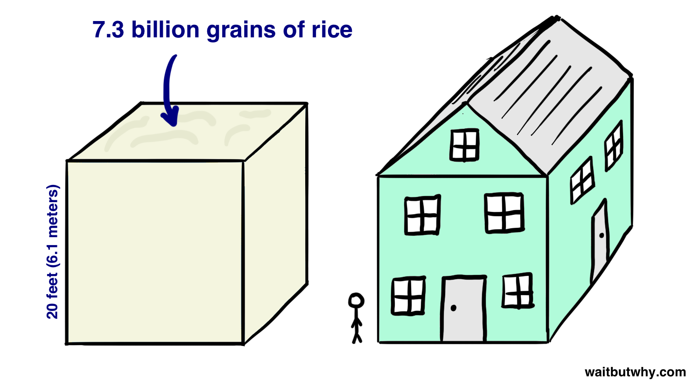
如果是73亿粒沙子呢？根据沙粒大小的不同，如果是73粒比较粗的颗粒的话(假设直径为2毫米)，那么可以填满4米的立方体，如果是中笑着大小的颗粒(直径为0.25毫米)，那么差不多是46厘米的立方体，如果是很小很小的沙粒(直径为0.0625毫米)的话，差不多是1700立方厘米的体积，比1.5升的可乐稍微多一点。
如果是行走73亿步的话，可以绕地球150圈，如果以每秒走两步的速度计算，需要走上115年。
73亿人的一维队列
我们首先要来尝试着把所有人都安排在一个一维队列里面。我们从厄瓜多尔的基多附近开始，这里已经接近赤道了，我们将要用这73亿人连成的线会跟着赤道走。来，让我们从Carlos开始，过来Carlos，站在这：
第二个是Daniela, 第三个就是你，来Andrea。我们要做的更快更有效果一点，我需要每个人在没有接触前后人员的前提下尽可能的靠近一点点。有些人可能需要比别人更多或更少的空间，因为每个人的体型是不一样的，不过平均下来我们假设每增加一个人，队列的长度就增加30厘米。
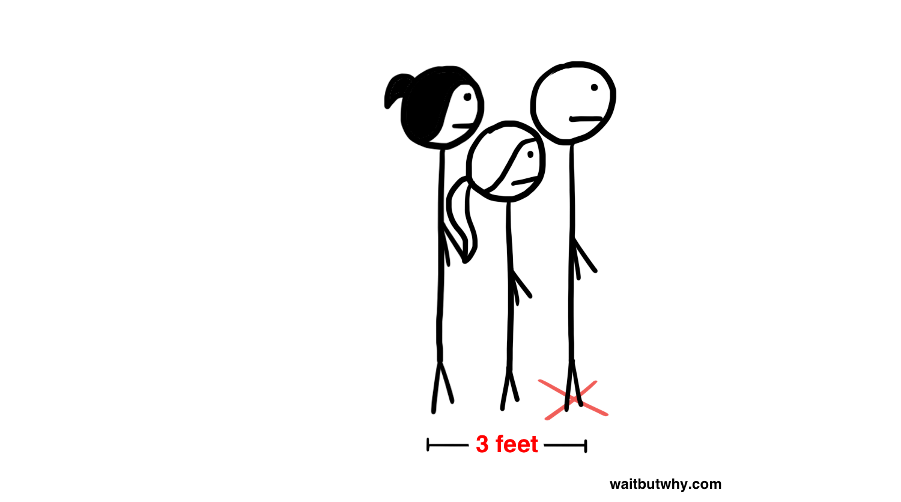
照这样一个一个排好，我们的队伍变得越来越长。我们从桥上跨国大海，从隧道穿过大山，让队严格的跟着赤道走。不久，队伍已经绕地球一圈了，又回到了Carlos的位置。这个时候我们的队伍里站了多少人了呢？仅仅1.31亿，不到总人口的2%。于是我们要再绕地球几圈。在经过56圈之后，在印度尼西亚的苏门达纳岛上我们的队伍里站进去了最后一个人，我们的第一个试验完成了。
这个结果让我感觉还不是很直观，不停循环着就结束了。让我们来尝试一下别的方法。
来，Carlors还是你站第一个，然后站稳咯，我们让Daniela站在你肩膀上，然后是Andrea站在Daniela的肩上。
我们人类的平均身高是165厘米，但是我们是从肩膀开始往上叠的而不是脑袋，所以我们假设每叠一个人，这个人塔的高度增加134厘米。
我们不停的往上叠啊叠，我们到达了月球。而这个时候我们才叠了2.86亿人，还剩下96%的人没有站上去。当我们最终结束的时候，这个人塔的高度是980万公里，是我们地球距离太阳的15分之1，距离金星的4分之1，距离火星的5分之1。
如果我们让所有人的手拉着手围成一个圈呢？这样子的话每加进一个人长度平均可以增加91厘米。
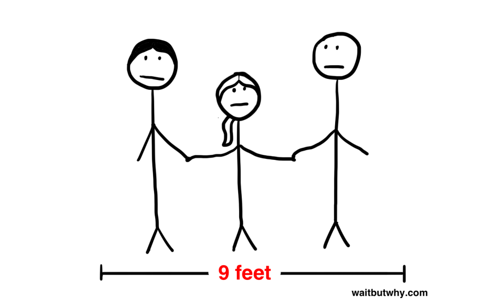
按照这样的方法的话，我们最后可以围成一个周长有660万公里，直径为210万公里的大圈：
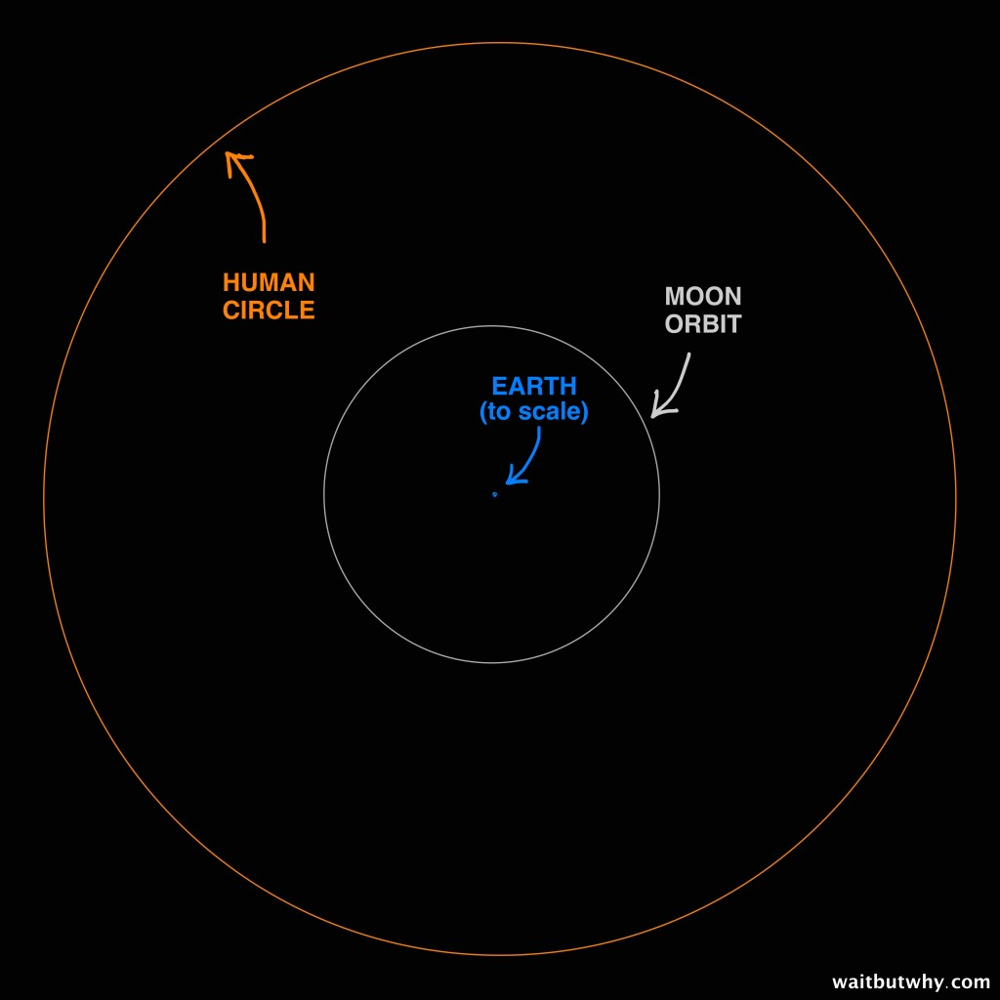
这个时候虽然我们都手拉着手，但是由于早主脱离了大气层都已经死翘翘了，这个时候我们看地球就像平时在地球上看月亮一样是个小圆盘。
好吧，把大家排成以上任何一种一维的形式都不是很舒服的，让我们接下来看看把大家安排进二维的模型里。
73亿人的二维阵列
增加一个维度的话，我们所有人类组成的图形会小很多。
要把人尽可能的放进一个二维空间的话，我们需要尽可能精确的知道在不踩到周围人的情况下每一个人需要占用多少面积。答案是0.1平方米，也就是每平方米可以站差不多10个人。
那么一个10米乘10米的空间我们可以站下1000个人，一个标准篮球场的大小是28米乘以15米，也就是说差不多可以站4200个人。
以此类推，一个橄榄球场可以站下5.4万人，是列支敦士登和摩纳哥的全部人口。如果是一个标准足球场的话可以容纳7.1万人，已经够安排进整个格陵兰岛的人口了。
我们北京的天安门广场是一个880米乘500米的巨大广场，差不多占地半平方公里。
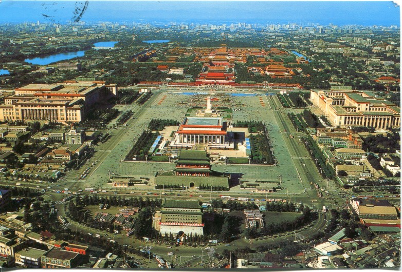
如果将当中的建筑都清空的话，整个广场可以容纳的人数是440万人，是克罗地亚，阿曼，黎巴嫩，巴拿马，摩尔多瓦共和国，乌拉圭，科威特，蒙古，或者立陶宛这些国家的全部人口。
一平方公里的土地可以容纳1千万人，是目前一个大城市的所有人口，而将2千6百万人挤进1平方英里，这当中已经可以包括挪威，瑞典，芬兰，丹麦的所有人了。
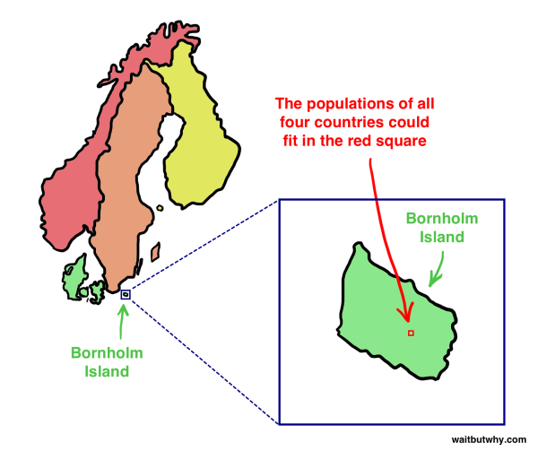
纽约的中央公园，占地3.41平方公里(1.3平方英里)，可以轻松容纳澳大利亚，摩洛哥，沙特阿拉伯，秘鲁，委内瑞拉，马来西亚，尼泊尔，莫桑比克和叙利亚的人口。可以把所有的13900万犹太人都容纳进去之后，不家富足的空间可以容纳罗马尼亚，智利，还是荷兰的人口。
这一切仅仅是个开始。
所有3.2亿美国人需要占用5.7公里乘5.7公里的的面积，需要行走大约五个小时才能绕一圈。
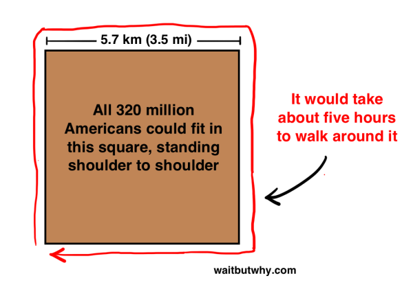
一个10公里乘10公里的正文形区域可以容纳10亿人，差不多百慕大的两倍大小的小岛，需要大概行走8个小时绕一圈。比这稍微大一点的马萨葡萄园岛占地226平方公里可以容纳全世界所有的基督徒，实际上这已经可以容纳整个北美和南美的全部人口，而且还有空间来容纳整个非洲的人口。如果全世界的女性都厌倦了男人，想人自己开一个全球女性大会的话，她们只人聚集在360平方公里的加沙地带就够了。
好了，最后我们想要知道的是到底需要多大的地方才可以容纳的下所有的73亿人呢？答案是方圆27公里的土地就够了。
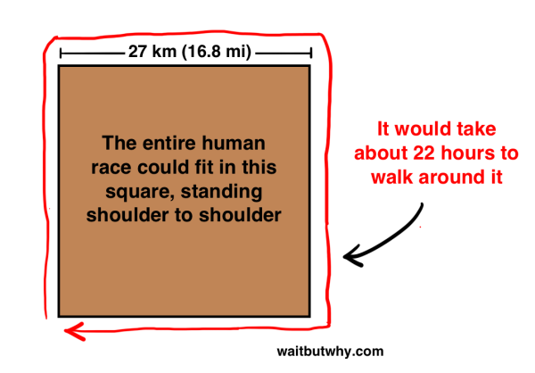
这块面积比巴林还小，如果把它放到非洲大陆去看的话，差不多就下面这点：
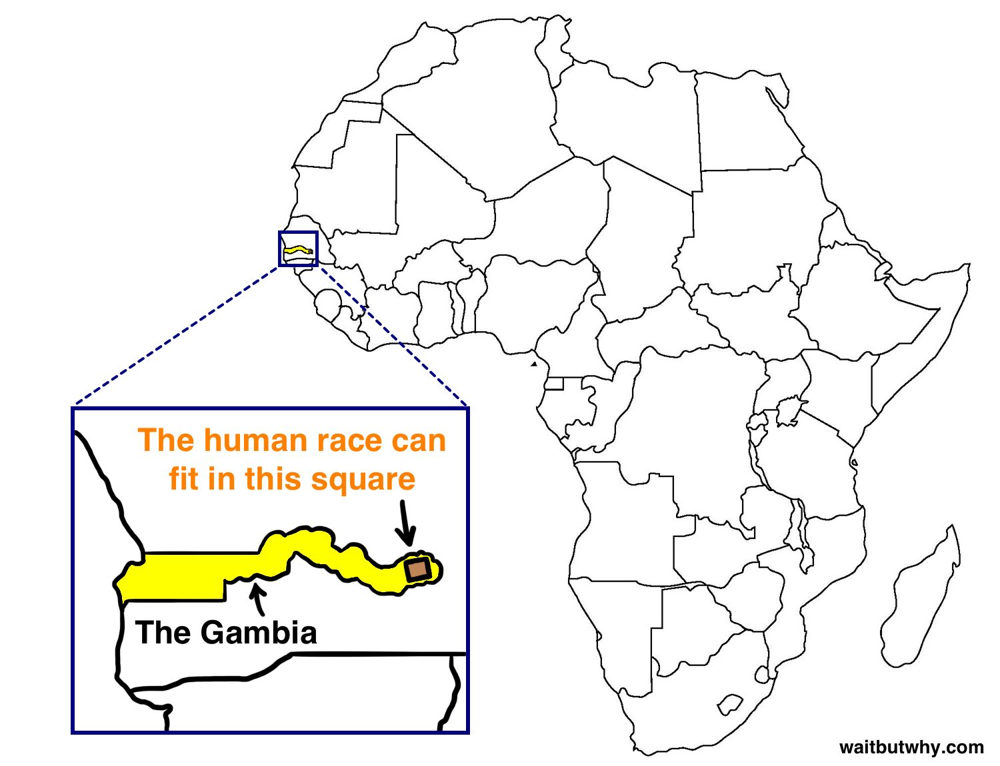
同样这个面积比纽约还要小。
纽约市的面积有786平方公里，也就是303平方英里，可以容纳全球所有人还略微有的多。其中：
* 曼哈顿可以容纳5.9亿人
* 布鲁克林可以容纳13.8亿人
* 皇后区可以容纳28.3亿人
* 布朗克斯可以容纳10.9亿人
* 史泰登岛可以容纳15.1亿人
让我们试着把一些不同国家的人口填入纽约各个区：
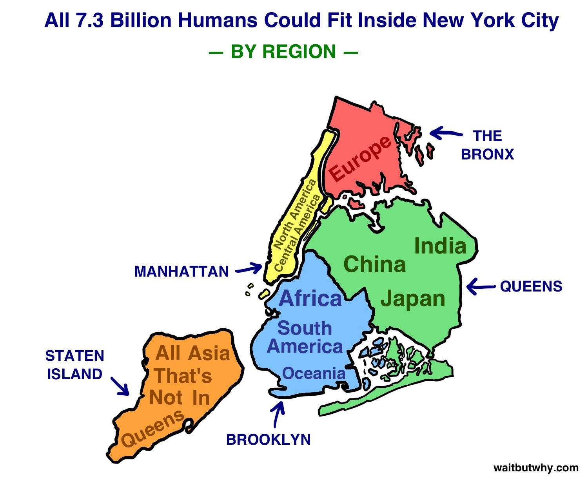
那么这些人的生活状态如何呢?
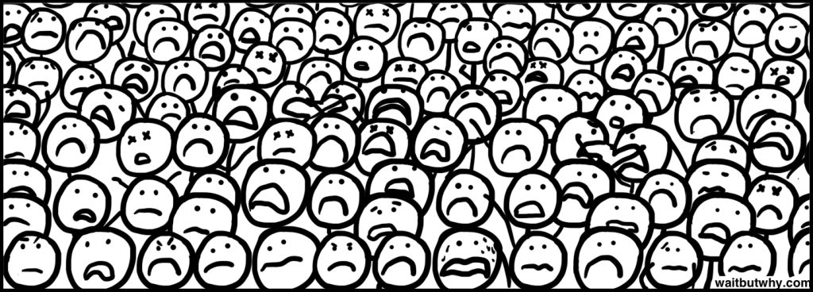
好吧，让我们根据不同的宗教信仰来安排区域试试：
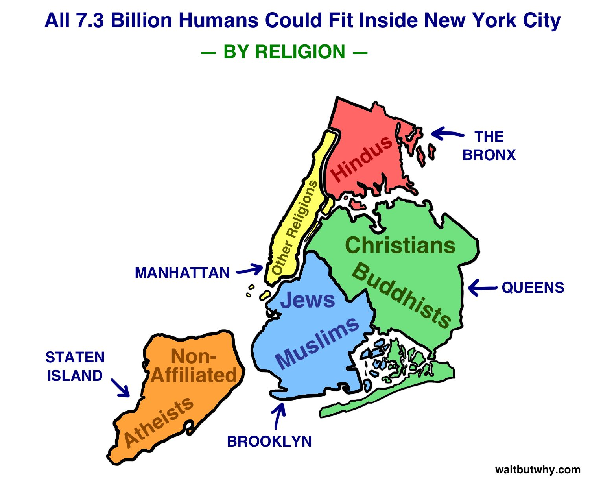
好了，这就是所有人类需要占用的面积，而且是当前活着的全球总人口。
科学家们推算出来的历史上的所有存在过的人类总数在900到1100亿之间，平均估计是1080亿，根据这个推断的话现有的73亿人只占了历史上所有人口总和的7%：
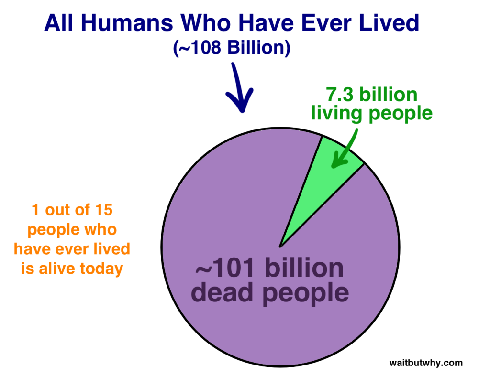
如果把所有这些人都复活的话，我们需要多少空间呢？
我们需要10800平方公里，方圆103公里左右，这也很容易就可以装进牙买加，卡塔尔，科威特，冈比亚，或康涅狄格州。
根据这样的计算方法，在韩国，冰岛，危地马拉，或古巴我们可以容纳1万亿的人口，而如果把地球上所有的空间都挤满人的话，我们一共可以容纳下1.48乘以10的15次方的人类，是现有人口总数的20万倍。
73亿人的三维堆积
基于之前的每平方米可以容纳10个人的计算方法，我们再把人们的平均身高定义为165厘米，所以我们可以认为一个以一平方米为底1.65米为高的立方体可以容纳10个人，换算之后我们可以得出一个人需要的空间是0.165立方米，也就是说1立方米空间大约可以容纳6个人（6.06个人）。
我们可以建造一个建筑物每一层都容纳不同身高的人，有一些人比1.65米高有一些比1.65米矮，我们可以把相同身高的都放在一个楼层里，每个楼层的高度只要将将好可以站进去顶到天花板就可以了，这样子平均下来每一个楼层的高度应该和所有人的平均高度是一样的1.65米。
帝国大厦的体积差不多是105万立方米，如果我们在帝国大夏内部干这样的事情的话，把其中全部挖空建造平均高度为1.65米的楼层，那么最终我们可以把630万人塞进去。
达拉斯小牛队的主场AT&T体育场，体积有294万立方米，在这里的话我们可以用同样的方法塞进去1760万人。已经足够容纳整个达拉斯的人口了，还可以加上纽约，洛杉矶，芝加哥，旧金山和波士顿的人。
世界上目前最大的单体建筑应该是波音在华盛顿州的埃弗雷特工厂，占地900米乘以495米，和天安门广场差不多，高度是33米，那么整个建筑的体积有1300万立方米，我们可以将整个法国和比利时的人塞进去，差不多是7870万人。
那么显然这距离我们要把所有人放到一个三维建筑里的目标还相差很远，目前世界上找不到这样一个建筑可以塞进所有的人，即使是在我们假设的这种极限条件下。
根据每个人需要0.165立方米来计算的话，我们总共需要12亿立方米的体积，也就是比1立方千米大一点点，准确的说是需要1.204立方千米，这样的立方体的话是差不多长宽高各为1.07公里。占地面积是之前波音工厂的两倍，而高度需要达到1070米，比世界上目前最高的大厦哈里法塔要高29%。如果我们在曼哈顿建造这样一个建筑的话，差不多看起来是下面这个样子：
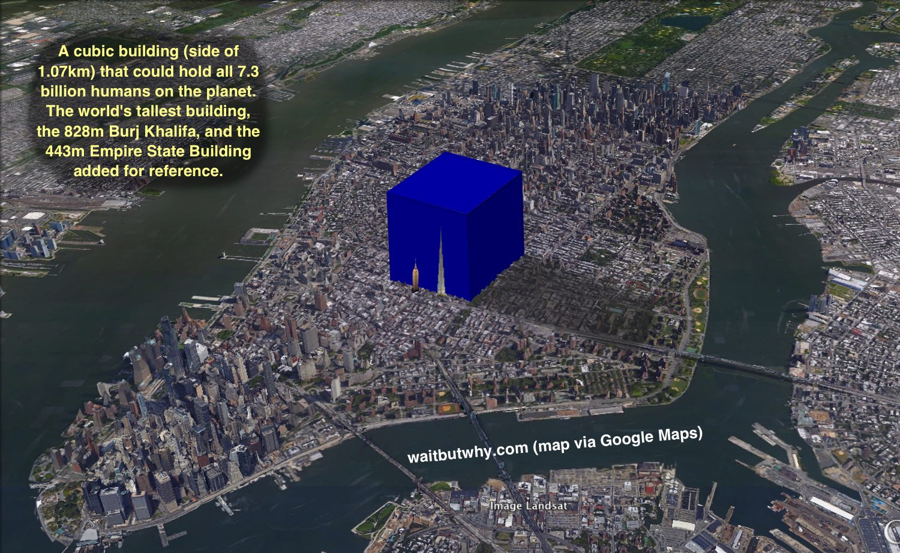
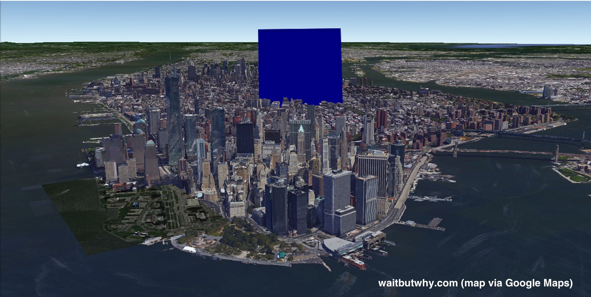
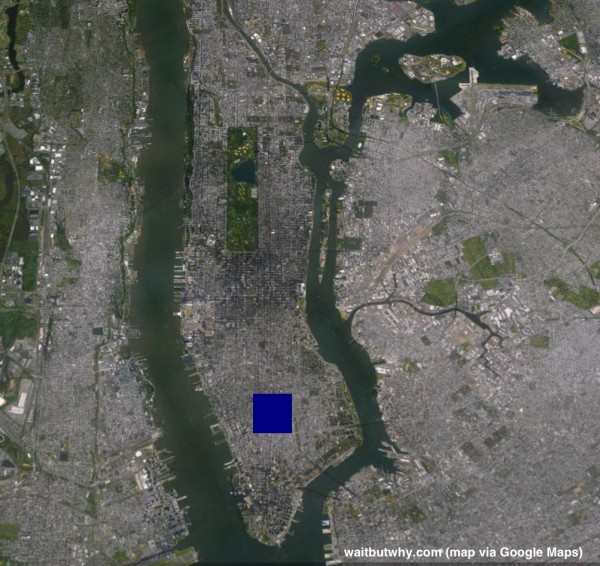
这个蓝色物体里容纳了所有人。有你，你的家人朋友，16岁的柬埔寨的小女孩和她的小伙伴们，也有索马里的海盗，他的理发师，还有理发师的朋友 ，每一个NBA球员都在这里，所有的明星，政客，酒保，建筑工人，牧师，罪犯，王子，公主，所有的13亿中国人，当然还有ISIS。
所有的人米总数，在一维尺度上可以绕地球55圈，或者围成的圈可以超过月球轨道，在二维尺度上可以填满整个纽约市，而最后如果是放在三维的建筑物里你或许只需要20分钟就可以绕着这个建筑走上一圈。
到这里，我们对73亿人在一维，二维和三维尺度上的度量可以算是完成了，但是与其在这个时候结束本文，我们不如再进一步大胆假设一下，如果真的可以把所有人的集中在上面这样的蓝色建筑里，而且我们知道原子当中还有很大的空隙，那么如果我们把这些空隙都压缩掉呢？
进一步压缩73亿人
每一个原子都是不同的，但是有一个基本规律就是原子的大小是原子核的10万倍左右，而原子核质量几乎是整个原子的质量。从三维的角度看，也就是说原子核的大小只占了整个原子空间的10的15次方分之一。那么我们假设原子是一个1立方公里体积大小的立方体，根据上面的内容可以知道这已经差不多快可以容纳下所有的人类了。
在这么一个巨大的立方体的里面，有一个差不多1立方厘米大小的小立方体，差不多和我们的方糖那么大，这就是原子核的大小。而取决于原子质量的东西也就是质子，中子都在这个方糖里面，而实际上另外999,999,999,999,999倍的空间几乎是空的。
而我们人类身体的质量也就是由我们体内的原子中心这些原子核的质量所组成的。
所以，如果我们把这当中的空白空间全部压缩掉，把73亿人的每一个原子的空白空间全部压缩掉，我们会剩下些什么呢？
答案是，一个M豆！
事实上一还不到一个M豆的大小。平均一个人的实际体积差不多只有0.0664立方米，所有人加在一起也只有4.85亿立方米，那么我们按照之前提到的10的15次方的比例压缩到原子核大小的话是0.485立方厘米。而一个M豆的体积有0.636立方厘米，多出了30%。
哈，这就是今天我们要聊的所有关于73亿人的话题啦，最后的结果是我们把73亿人压缩成了一个重达4.5亿顿的M豆哈哈。